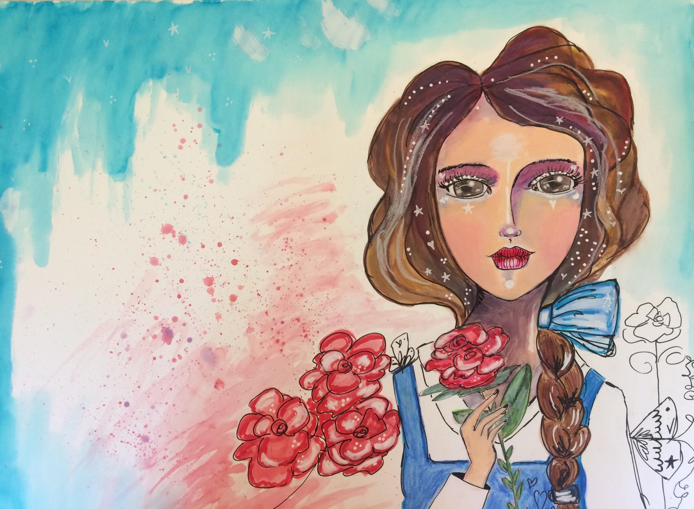

My Painting of Belle
My Belle painting from Willowing Art’s Ever After 2018 class. This one went very fast! I am really stretching my creative side!
Sure wish I had more time to spend doing what I love!
More at Willowing Arts


My Belle painting from Willowing Art’s Ever After 2018 class. This one went very fast! I am really stretching my creative side!
Sure wish I had more time to spend doing what I love!
More at Willowing Arts
My Snow White and the Evil Queen painting from Willowing Art’s - Ever After 2018 class. So inspired! I haven’t painted faces in over 20 years!
I learned a great deal and improved tremendously over the course of several day. And it’s all fairytale inspired! Squee!
More at Willowing Arts
I love putting together soldered slide images! A simple sentiment and some patterned paper transform these glass slides into tiny pieces of art.
Mothers will love the personalized touch to these simple framed works of art.
More at Stampington & Company

Shopping Christmas holiday closeouts can be rewarding! That’s when I saw the clear plastic
ornaments and a “Happy New Year” coaster pack. A cardboard Christmas tree flipped upside down is the perfect cone for a Mother’s Day bouquet.
These projects are a finished gift that any mother would be happy to display well past Mother’s Day!
More at Stampington & Company